This reconstruction moves through the physical spaces of the Zeche Zollverein in Essen, now a UNESCO World Heritage site. Each section is grounded in a specific building of the former mine complex — the coking plant, the wage hall, the winding tower — where the decisions described were made or felt. The architecture is not a metaphor; it is the material shell of the processes under examination.
01 · Shaft XII — The Winding Tower
What the “Zollverein Cartel” Was
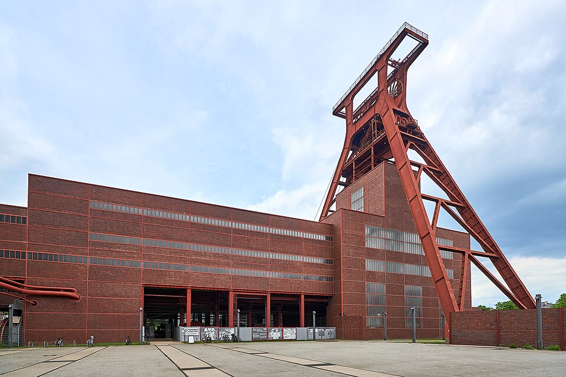
“The Zollverein Cartel” is shorthand for the organised consolidation of the West German hard-coal industry — the moment when dozens of competing Ruhr collieries were drawn together by the state into a single company, Ruhrkohle AG, in 1969. It takes its name from the Zollverein colliery, the carbonised heart of the Ruhr and the most famous pit in the basin, which stands here as the emblem of the whole process.
A cartel, in the strict sense, is an agreement among producers to limit competition — to fix prices, divide markets, or coordinate output. What happened in the Ruhr went further: it was not a private pact but a compulsory combination, engineered through law and subsidy, that replaced competition between firms with a single state-backed monopoly. That is the concept this route sets out to explain — who built it, how, and who it served.
Read against the archive rather than the textbook story of “market failure,” the episode looks less like an industry quietly succumbing to cheaper oil and more like a managed restructuring of ownership, labour, and decline. The Shaft XII headframe, the most famous silhouette in the Ruhr, is where that story is easiest to see whole.
02 · Central Coking Plant
Who Started It — The Triangle of Power
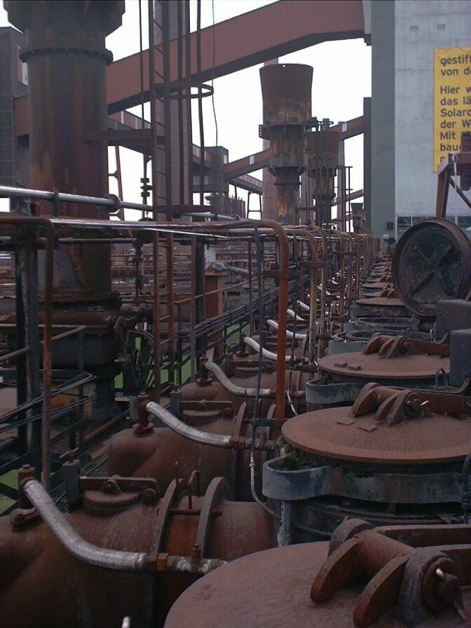
The consolidation was not the work of one industrialist but of three converging interests.
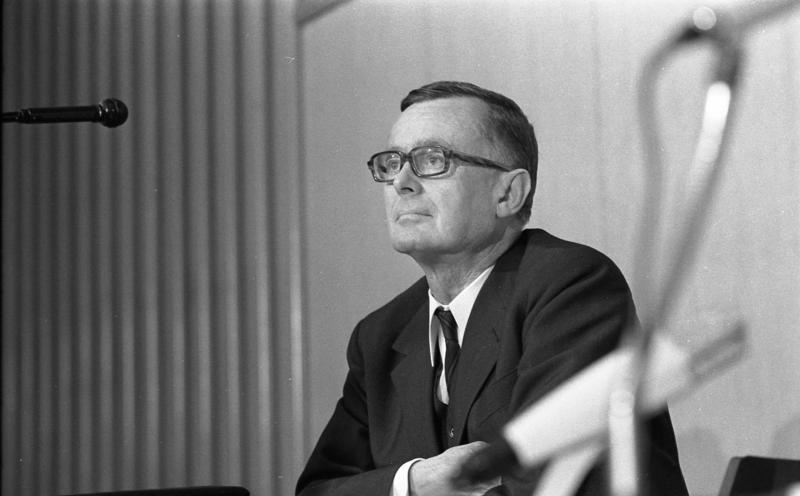
The federal economics ministry. Under Economics Minister Karl Schiller (SPD), the Grand Coalition pursued Konzertierte Aktion — coordinated steering of industry, labour and the state — and used the “rationalisation cartel” provisions of the competition law (Gesetz gegen Wettbewerbsbeschränkungen) to legalise a concentration that pre-war decartelisation rules were meant to prevent.
The Ruhr industrial dynasties. The houses behind Thyssen, Krupp and the Haniel line — figures such as Hans-Günther Sohl and Berthold Beitz — saw competition eroding control of a shrinking sector and pressed for a compulsory combine that would shift its losses onto the public budget.
The mineworkers’ union, IG Bergbau und Energie. Its leadership traded militancy for security. The coking plant, where coal was cooked into the coke that fed the steel industry, is the apt setting: this is where the three were fused.
03 · Ruhr Museum Entrance — Former Coal Washery
The Forced Amalgamation — Ruhrkohle AG, 1969
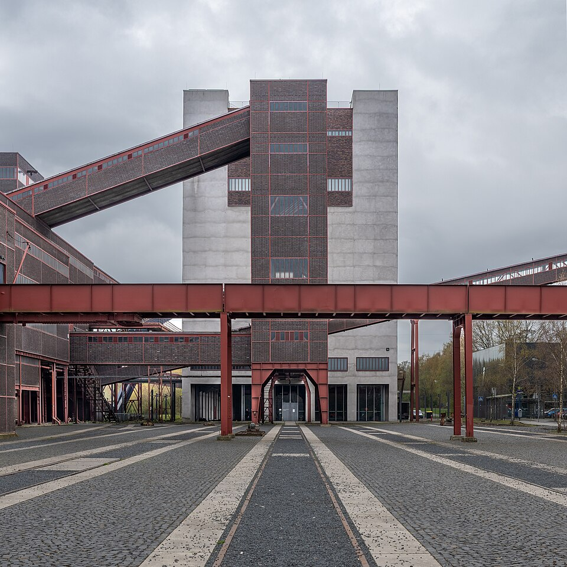
The Kohlekrise had been building since 1958, as cheap fuel oil and imported American coal undercut Ruhr pits. The state’s answer was the 1968 coal-adjustment law and the creation of Ruhrkohle AG, which absorbed some 26 mining companies — roughly nine-tenths of Ruhr output — into one entity. Twenty-eight firms, give or take, became a single state-backed monopoly buyer and seller.
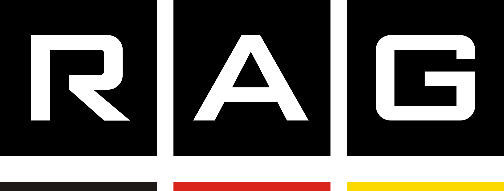
The building that now houses the Ruhr Museum was the coal washery, where raw coal was sorted, washed and concentrated before sale. The parallel is exact and unforced: the same logic that graded and combined coal here was applied to the firms themselves, cleaned of competition and concentrated into one manageable mass.
04 · The Wage Hall (Lohnhalle)
Labour Aristocracy as Pacification Corps
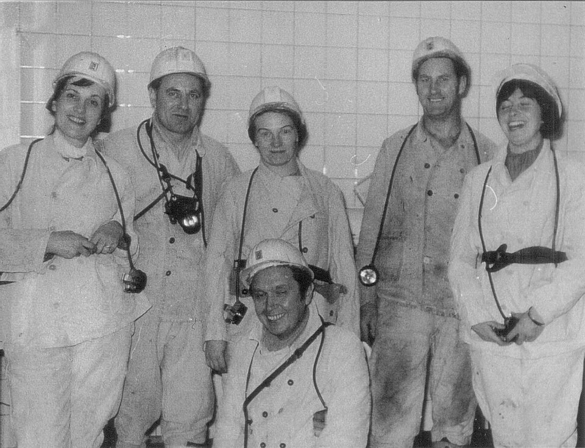
Consolidation needed labour peace, and the union supplied it. Under Walter Arendt — soon to become federal Labour Minister — IG Bergbau accepted the restructuring in exchange for a generous Sozialplan: pay guarantees, retraining, and adjustment payments (Anpassungsgeld) that let older miners leave the pits early on cushioned terms.
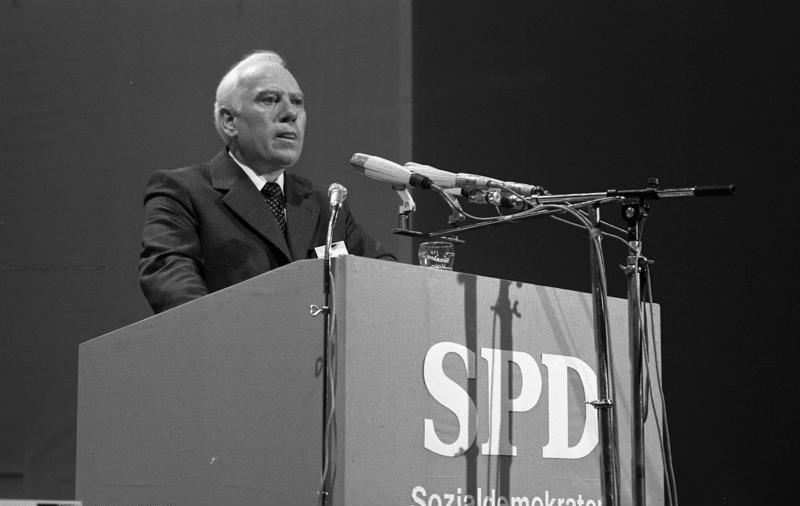
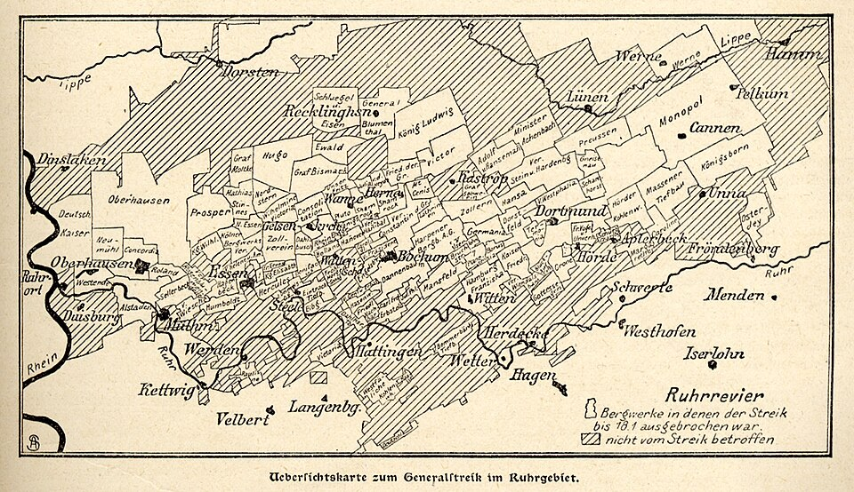
Read critically, the deal converted a potentially explosive workforce into stakeholders in their own managed decline; class conflict was absorbed into a pension schedule. The wash-house and wage hall — where miners drew pay and changed for the shift — is where that bargain was felt on the body, shift by shift. It was, on the documented record, one of the most orderly industrial contractions in postwar Europe.
05 · The Compressor House / Power Plant
Beneficiaries — Who the Concentration Served
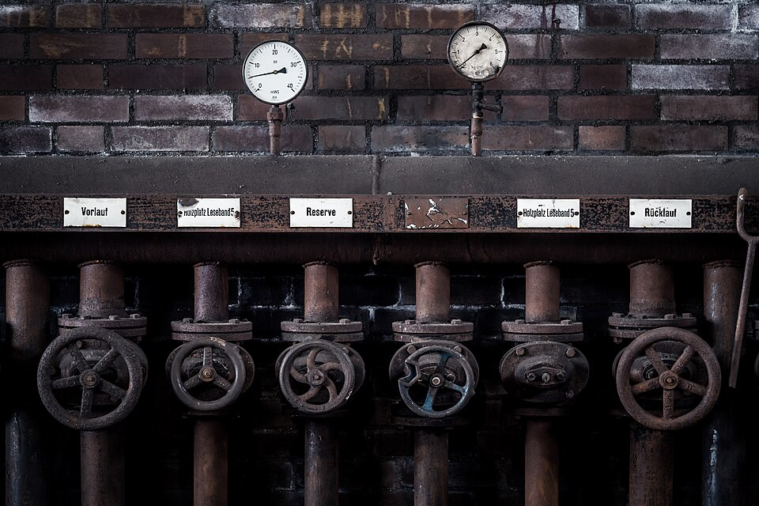
Consolidation was not about saving coal; it was about who absorbed its costs and who kept its benefits. The steel makers — Thyssen, Krupp and their successors — secured a guaranteed supply of subsidised coking coal, its price underwritten by the taxpayer, while they redirected capital toward the export industries of Modell Deutschland: cars, chemicals, machinery.
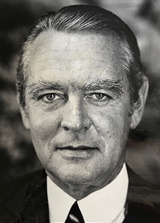
Ruhrkohle AG became the vessel into which the losses of a dying sector were poured, even as the same firms kept the profitable downstream business. The compressor house — which supplied the compressed air and power that drove the whole works — is a fair emblem: a central plant that kept the system running while the value flowed outward to its owners.
06 · The “Ring” Railway — The Perimeter
Aftermath
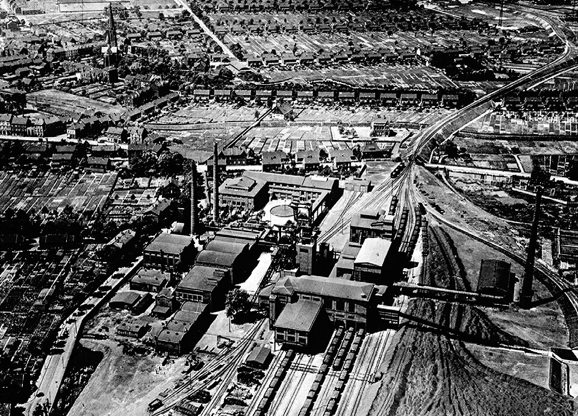
What followed was decades of orchestrated shrinkage. Pit after pit closed on schedule, financed by subsidy and adjustment payments, until the last German hard-coal mine — Prosper-Haniel — wound down in December 2018. Zollverein itself stopped mining in 1986 and its coking plant in 1993.
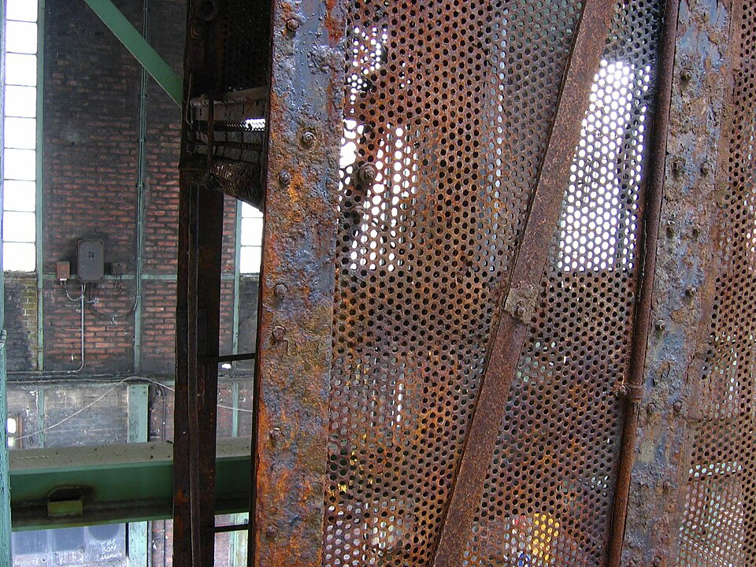
The loop railway that once circled the site, moving coal and men within a closed industrial world, is now a quiet line through a monument. The perimeter that defined the working complex still reads as an edge — but it now encloses memory rather than production. The decline was real; the point is that it was administered, not merely suffered.
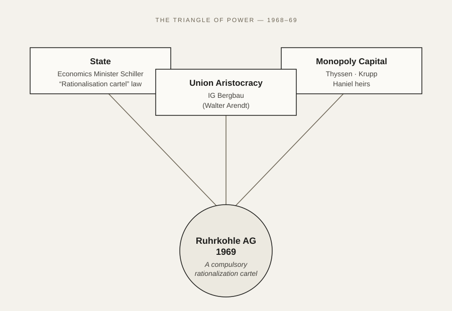
Coda · Zollverein Park — Today
Where the Command Once Hummed
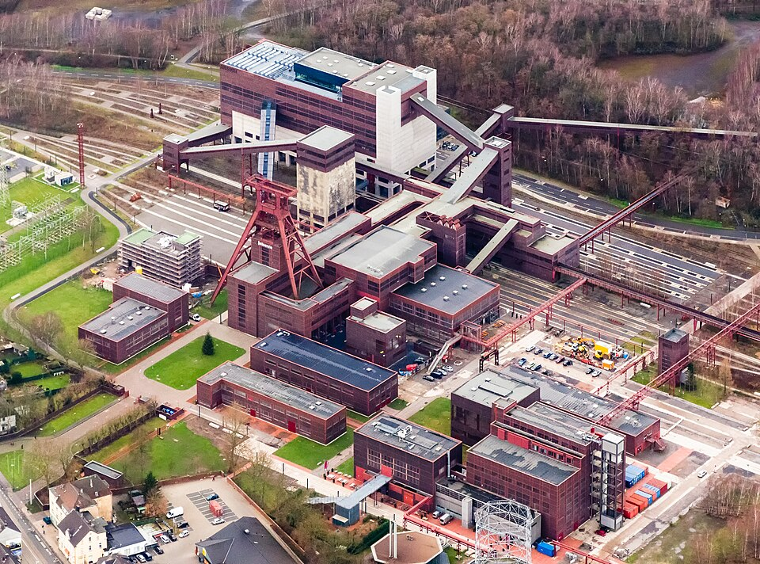
The colliery closed in 1986 and was inscribed as a UNESCO World Heritage Site in 2001. Where the command of a coal monopoly once hummed, there is now a public park, a museum, and a design campus — the machinery preserved, the argument it embodied left for visitors to read.